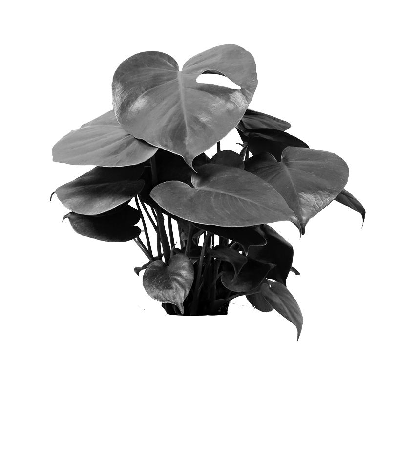

Monstera Delicisosa.
Origin: Central America
Monstera are species of evergreen tropical vines and shrubs that are
native to Central America. They are famous for their natural
leaf-holes, which has led to the rise of their nickname, Swiss
Cheese Plant. The Monstera's leaf-holes are called fenestrations
and are theorized to maximize sun fleck capture on the forest floor
by increasing the spread of the leaf while decreasing the mass of
leaf cells to support. Part of Araceae, the Aroid Family, they are
one of the few aroids that produces edible fruit, particularly,
Monstera deliciosa, though they rarely flower or produce edible
fruit indoors. Monsteras, like many aroids, were made known formally
to the botanical world during the early 20th century, although they
had been known for much longer by the indigenous peoples of Central
America.
Light:
Thrives in bright to medium indirect light. Not suited for intense,
direct sun but can be acclimated to withstand it.
water:
Water every 1-2 weeks, allowing soil to dry out between waterings.
Expect to water more often in brighter light and less often in lower
light. Pro tip: Monsteras can benefit from filtered water or water
left out overnight before using.
Humidity:
Normal room humidity will do, but prefers humid conditions if possible.
Consider incorporating a fine-mist mister or humidifier to boost humidity
level indoors.

Monstera Delicisosa